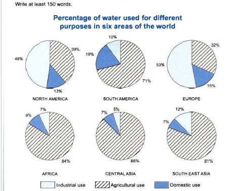

You should spend about 20 minutes on this task.
The charts below show the percentage of water used for different purposes in six areas of the world.
Summarise the information by selecting and reporting the main features, and make comparisons where relevant.
Write at least 150 words.

⬜ Industrial use ▓ Agricultural use 🔵 Domestic use